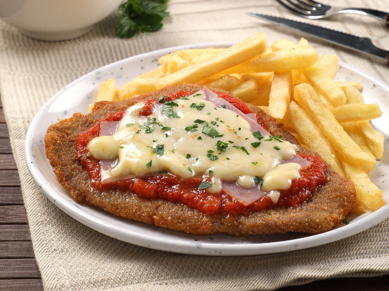
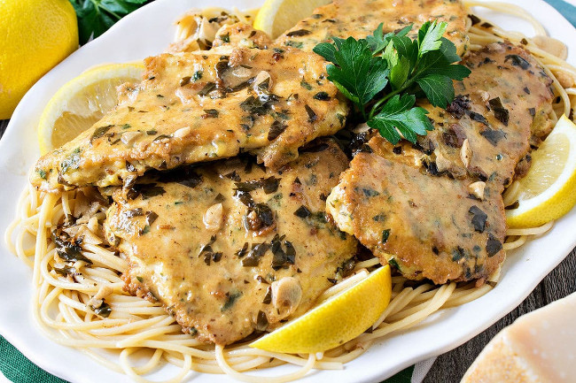

Основные блюда
Миланеса а-ля наполетана — аргентинская отбивная с сыром и соусом
Отбивная Миланеса а-ля наполетана (Milanesa a la napolitana) состоит из тонкого ломтика говяжьего филе в панировочных сухарях обжаренное на сковороде. Затем жареный стейк покрывают томатным соусом, ветчиной и сыром моцарелла и запекают в духовке, как пиццу. Обычно его подают с картофелем фри или белым рисом. В Аргентине, стране асадо (мяса на гриле), мясо является главой стола. Местные жители всегда предпочтут мясо любому другому блюду и всегда ищут оригинальные и вкусные способы приготовить его. И данный рецепт миланезы по-наполитански только подтверждает это (рецепт).
Отбивная с соусом из фарша

Интересный рецепт — отбивная с соусом, основой для которого служат свиные купаты или просто свиной фарш. Использование фарша в качестве главной составляющей соуса нередко встречается в американской кухне. Даже есть отдельное блюдо — фарш в молоке. Что касается непосредственно самих отбивных, то для них есть даже специальное название мяса, отбитого молотком с зубчиками — cubed steak. Это название возникло из-за квадратной формы следов на мясе после отбивания (рецепт).
Курица по-французски
Судя по названию этого блюда — Chicken Francese (Курица по-французски) — можно подумать, что этот легкий и вкусный рецепт курицы восходит к французской кухне. Но это не так. Курица франсез (также известная как Chicken Francaise или Chicken French), как полагают, впервые была приготовлена итальянско-американскими иммигрантами в Рочестере, штат Нью-Йорк, которые адаптировали этот рецепт во французском стиле, когда телятина начала выходить из моды (рецепт).